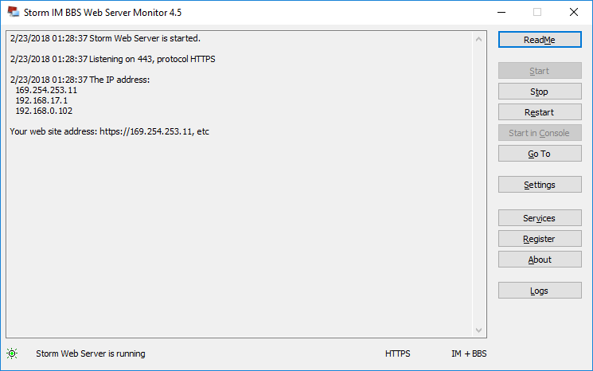
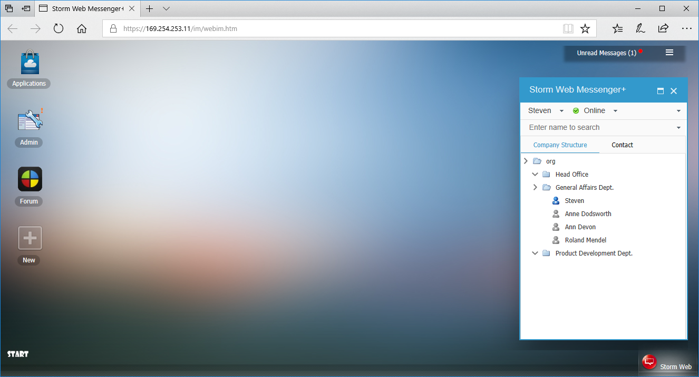
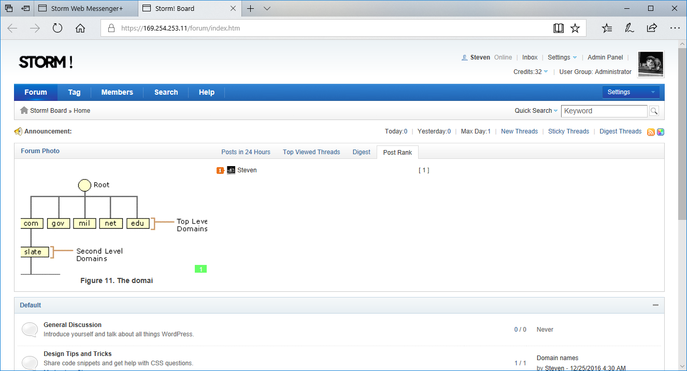

Storm Web Messenger+ help you set up an independent web-based instant messaging & bulletin board system in your own office.
Main Features
- Organizational structure
Directory tree of the multi-level organizational structure of enterprises provides clear understanding of the organization.
It is auto updated when the structure of the organization changes.
- Instant Communication
Quickly and easily send and receive instant messages. You can change the text fonts in different colors for a personalized display.
- Contact Group
Contacts can be grouped. For example the most frequent contacts or contacts from in the same division.
- Status display
Show contact information: online, busy, offline etc, updated in real time. - Personal information
Directly lookup seat-number, phone-number and other personal information - Historical information
Chat log etc. - Quick Search field
Quickly look up someone by name or other criteria.
- Security
Chat record encrypted storage; the chat file encryption storage.
When users log on or change the password, the data submitted is encrypted with the public key, the server-side private key to decrypt. - Interface
It provides a new application interface that allows users to integrate existing applications. - Forum
Our Forum software has a fresh UI which is simple, clean; it is designed to be powerful, fast, and easy to use. - Supports SSL/TLS
- It is safety, faster and easier.
Easy to install and use
Built-in storm HTTP / HTTPS server and SQLite database, one click installs and it is easy, simple.
For Windows Server 2008 / 2012 / 2016 / Windows Vista / Windows7 / Windows8 / Windows10
Getting Started
1. After install, click 'start' to start the service.

2. The software works with the following web browsers: Internet Explorer, Google Chrome, Mozilla Firefox, Opera and Windows Edge.
It also provides a classic client.

3. Forum - Share your idea and find useful information

More...